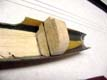
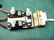
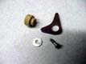
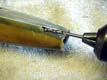

Use the provided check boxes to mark off your progress as you go.
Use the provided check boxes to mark off your progress as you go.
The photos and text on this page are courtesy of Bud Elder. Bud also offers high quality pod halves for sale; contact him for details. Contact Patrick Sloan for details on purchasing a high quality commercially produced boom which meets the Allegro Lite specification. For Mark Drela's original figures and building details, see the following links: AllegroLite Home Page, AllegroLite Plan, and AllegroLite Fuselage Plan.
WARNING: As it turns out, Bud has been using the Allegro Composite 2M fuselage plan (Allegro Fuselage Plan) instead of the Allegro Lite plan. The building sequence on this page shows the following details which are different than the Allegro Lite plans:
Use the provided check boxes to mark off your progress as you go.
Using the full size plan, mark the wing bolt holes and cutouts.
Make the required cutouts.
Several methods can be used to cut the cutouts.
An X-acto #11 blade can be used.
Bud prefers a diamond coated disk in a Dremel following with a 1/2 inch drum sander.
Cutting the holes will leave a fuzzy edge.
Using CA will make it easier to sand the fuz away.
Note: Bud's holes, cutouts, and bulkhead locations are based on the Allegro Composite plans.
| Marking the Pod | Pod Holes Marked | Cutting the Openings |
|---|
Cut 2 slabs of medium balsa measuring 3/16 x 1 x 11-1/2 inches.
Carve and sand these to fit into each pod half.
Fit them as close to parallel to the center line as possible.
Sand the pod where balsa makes contact to scuff the surface.
Mix a small batch of epoxy and thicken with Cabosil or micro balloons.
Coat the balsa with a medium coat of epoxy and place into each pod half.
The thickened mix will fill any irregularities between the pod and balsa sides.
Note: The Allegro-Lite fuse drawing shows rails of 1/4 x 3/4 inch basswood rather than balsa, and the rails don't extend behind the front bulkhead. Either approach works fine. If you go with basswood, Mark suggests that 1/4 x 1/2 inch rails be used instead. This smaller size is adequate and is easier to shape.
| Epoxy Sides Into Pod Halves |
|---|
Cut a piece of balsa 5/16 x 1-1/2 x 5 inches to form the floor of the ballast compartment.
Cut a piece of hard wood 5/16 x 1/2 x 1-3/4 inches.
Cut a slot in the center of the balsa for the hard wood to fit and epoxy into place.
Once the epoxy sets, cut and sand the floor to fit the bottom of the pods one half at a time.
Draw a center line on the bottom of the piece and use this to check for proper fit with each pod half as you go.
Note: The Allegro-Lite fuse uses a 1/2 inch wide maple rail instead of the floor. Mark says a basswood rail is also sufficient if 0.021 inch carbon is used on top. The basswood is easier to shape than the maple.
| Making the Floor | Fitting the Floor |
|---|
Cut a piece of .014 in uni-directional carbon fiber (UNF) oversized to cover the top of the balsa floor.
Use a scrap of wood to create a mold that can be used to clamp UNF carbon to the floor top.
Cover the mold with a piece of plastic.
Mix some epoxy, coat both parts and clamp into the mold cutout.
After the epoxy is set up, clean up any flash and do a final fitting of the floor to the pod halves.
| Floor Clamping Mold | Bonding UNF to Floor |
|---|
Make up the two bulkheads.
Either hard balsa or bass can be used for the cores and faced with 1/32 inch plywood.
Glue or epoxy can be used for this step.
Note: Mark's original plans specify 3/16 hard balsa with grain oriented horizontally, faced with 1/64 inch ply. Mark also specifies fiberglass patches on either side to capture the nuts on the Allegro-Lite plans.
After the glue is set, mark center lines on the bulkheads and fit to each pod half.
Drill clearance holes for 10-32 in the center of the bulkheads.
Soak the interior of the holes with thin CA to harden them.
Chase the holes with the drill again after the CA cures.
Using a Dremel tool or drill, create slots for the nuts.
Try for a snug fit.
Note: The notches on the upper corners of the bulkheads are for routing the pushrod housings later. The fore/aft location determines the size and shape of the bulkheads. The bulkheads depicted here and in remaining steps are based on the Allegro Composite plan.
| Bulkheads & Floor | Fitting the Bulkheads | Bulkhead Final Fit |
|---|
Tape the pod together with the bulkheads and floor temporarily in place.
Slip the boom over the end of the pod and mark where to cut the end of the pod off.
Remove the boom and trim the pod to length.
Bud prefers to use the diamond cut off blade in a Dremel tool, but an X-acto knife or even a razor saw can be used to cut the end of the pod off.
Note: Depending on where you got your pod halves, this trimming operation might be slightly different. For example, Mike Bailey's pod halves have a significant "tubular" portion instead of the blunt end like Bud's pod halves.
| Marking Pod For Cutoff |  | Cutting Off Pod |
|---|
Wrap a rubber band around the end several times to hold the pod together tightly.
Using a 1/2 inch Dremel drum sander, open the hole to fit the boom.
Work the drum sander on the end until it sands its way into the pod.
The hole will be a few thousands smaller than the boom.
Leave it this way for the time being.
Note: It just happens that a 1/2 inch Dremel drum sander is the near perfect size for this operation. Bud points out that the 1/2 inch drum sander is indispensable for many model building uses.
| Sizing Pod Boom Hole |
|---|
Construct a bulkhead for the front of the boom from hard balsa.
Sand to fit one pod half, draw a center line on top and bottom, then fit to the other pod half.
Don't forget the notches for pushrod routing.
Note: This is effectively a third bulkhead which is based on the Allegro Composite fuselage configuration. If you use the Allegro Lite plan, the aft bulkhead supports the boom and this third bulkhead is not required.
|  | Boom Bulkhead |
|---|
Supplement your full size fuselage plan with some sheets of paper and extend the lines defining the boom position.
Line up the right half pod on your plans, hold in position, and lay the boom in place along the specified 1 degree angle.
Mark the required hole in the boom bulkhead. Then remove the bulkhead and mark the hole all the way around.
 | Extend Plans | Mark Boom Hole | Mark All Around |
|---|
Drill out the hole in the bulkhead and enlarge to fit the boom using the 1/2 inch drum sander.
Bud likes to flare out the hole on the forward side of the bulkhead using the drum sander to provide for a fillet of epoxy when the boom is later bonded in place.
Note: These steps are based on the Allegro Composite plan which utilizes a third bulkhead. If you are using the Allegro Lite plan, the aft bulkhead supports the boom. In this case, the boom must be notched to permit the wing bolt to pass through. A round basswood bulkhead is made to fit inside the boom, and holds the rear bolt nut. First drill the center of the bulkhead for 10-32 clearance of the wing bolt and harden the hole with thin CA. Also drill the 3/32 inch hole to pass the antenna. Next, cut the nut platform into the bulkhead, and glue the nut to it with CA. Then pot the assembly into the end of the boom, which is already notched for the bolt. Use enough epoxy around the nut to trap it firmly. Later, when gluing the boom into the pod, put a bolt in the bolt hole to make sure the bolt is vertical.
 | Boom Hole | Bevelled Hole |
|---|
Construct a servo mount from 1/16 inch plywood and 1/4 inch square spruce or basswood.
Use two pieces of 1/8 inch square spruce glued to the front side of the forward bulkhead to hold the back of the servo mount.
Note: This servo tray design which includes the spoiler servo inside the fuselage is based on the Allegro Composite fuselage plan. The Allegro Lite plan utilizes a simplified set of servo rails to mount only the elevator and rudder servos in a more forward position.
| Servo Mount (Bottom Side) |  | Servos Installed | Servos In Fuse |
|---|
Bud likes to construct a bell crank for the spoiler at this point using 1/16 inch circuit board material.
Use a piece of wood dowel to fabricate a hub for the crank.
The hub sholder can be made by turning the dowel in an electric drill, drill press, or lathe.
A small screw and washer retains the crank on the hub.
The bell crank assembly is bonded to the inside of the pod in a few steps.
Note: Bud points out that this configuration is different from Mark's original plans but worked better for him. This bell crank is required when the spoiler servo is mounted inside the fuselage. If the servo is mounted in the wing as specified in the Allegro Lite plans, then the fabrication and installation of this bell crank should be omitted.
|  | Spoiler Bell Crank |
|---|
Mark the hatch opening as per the plans.
Cut the pieces free with an X-acto knife for a clean edge.
The pieces will be used to form the hatch cover.
After the cut line is first carefully scored, the full cut can be made with a shallow sawing motion with the tip of the knife.
This is less prone to having the blade jump the cut and leave an unsightly gash in the pod.
| Cutting the Hatch |
|---|
Epoxy the floor, bulkheads, and the rear boom bulkhead into the right half of the pod.
The spoiler bell crank assembly can also be epoxyied in place at this time.
Bond the other half of the pod in place once the first half has cured.
Hold the pod halves together with clamps until the epoxy sets.
When the epoxy has set up, hold the pod seams together with masking or packing tape.
Bud prefers to tack the pod halves together with epoxy every couple of inches or so and let that set up first.
Use Kevlar or fiberglass strips to join the seams on the inside.
It helps if the strips are lightly misted with spray adhesive to tack them in place while they are wetted out with epoxy.
| Epoxying Bulkheads | Epoxying Pod |
|---|
Construct some holders for the servo tray using two pieces of 1/16 inch plywood.
On final assembly the holders are glued only on the front edge so they can be broken loose if the servo tray should need to be removed at a later time.
Note: This step is based on using the Allegro Composite plans. If you are using the Allegro Lite plans, you could now fabricate and glue in appropriate supports for the elevator and rudder servos.
| Servo Mount Holder |  | Holders Installed (Dry Fit) |
|---|
Drill two holes at the top back of the pod for the pushrod housings to exit the pod.
Make sure the housings, when in their proper position, are not pinched in any way by the edges of the holes.
This will cause pushrod binding.
Generously enlarge the holes as needed.
Epoxy will nicely seal the oversize holes later.
|  | Pushrod Exit Holes |
|---|
Cover the boom end with masking tape to prevent epoxy from entering it during bonding.
Scuff the end of the boom where it will contact the inside of the pod and bulkhead.
Mix some cabosil thickened epoxy and coat the end of the boom, pod, and bulkhead where they will contact each other.
After installing the boom in place, Bud pours epoxy into the bevel gap at the boom end.
The masking tape at the end of the boom prevents epoxy from running inside the boom.
| Masked Boom End |
|---|
Install the pushrod housings and anchor in place with thickened epoxy.
The aft portion of the housings may be held in place with tape.
Bud uses brass tubing to form bushings for the pushrod to servo arm connections.
Bud prefers to use the rudder pushrod (using a metal pushrod) as the antenna by soldering a short piece of wire to the pushrod and then cutting the same length off of the antenna.
Mark's plans call for routing the standard antenna through the boom.
Using the pushrod as the antenna can save significant noseweight if the tail surfaces end up overweight.
Bud uses short pieces of 1/32 inch brass tubing to connect the pushrods after tail parts are installed.
| Installing Housings | Pushrod Bushings | Final Setup |
|---|
This completes the fuselage assembly sequence. The wing, V-mount, and stabilizers can now be mounted.
| Revised 2/5/2003 James R. Osborn |
|---|
{kind=link}
{kind=link}
{kind=link}
{kind=link}
{kind=link}
{kind=link}
{kind=link}
{kind=link}
{kind=link}
{kind=link}
{kind=link}
{kind=link}
{kind=link}
{kind=link}
{kind=link}
{kind=link}
{kind=link}
{kind=link}
{kind=link}
{kind=link}
{kind=link}
{kind=link}
{kind=link}
{kind=link}
{kind=link}
{kind=link}
{kind=link}
{kind=link}
{kind=link}
{kind=link}